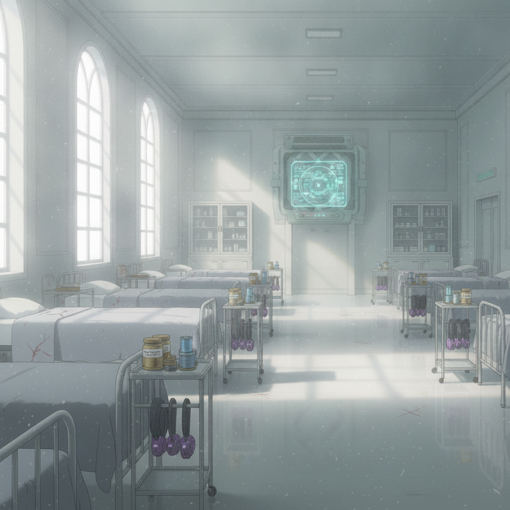
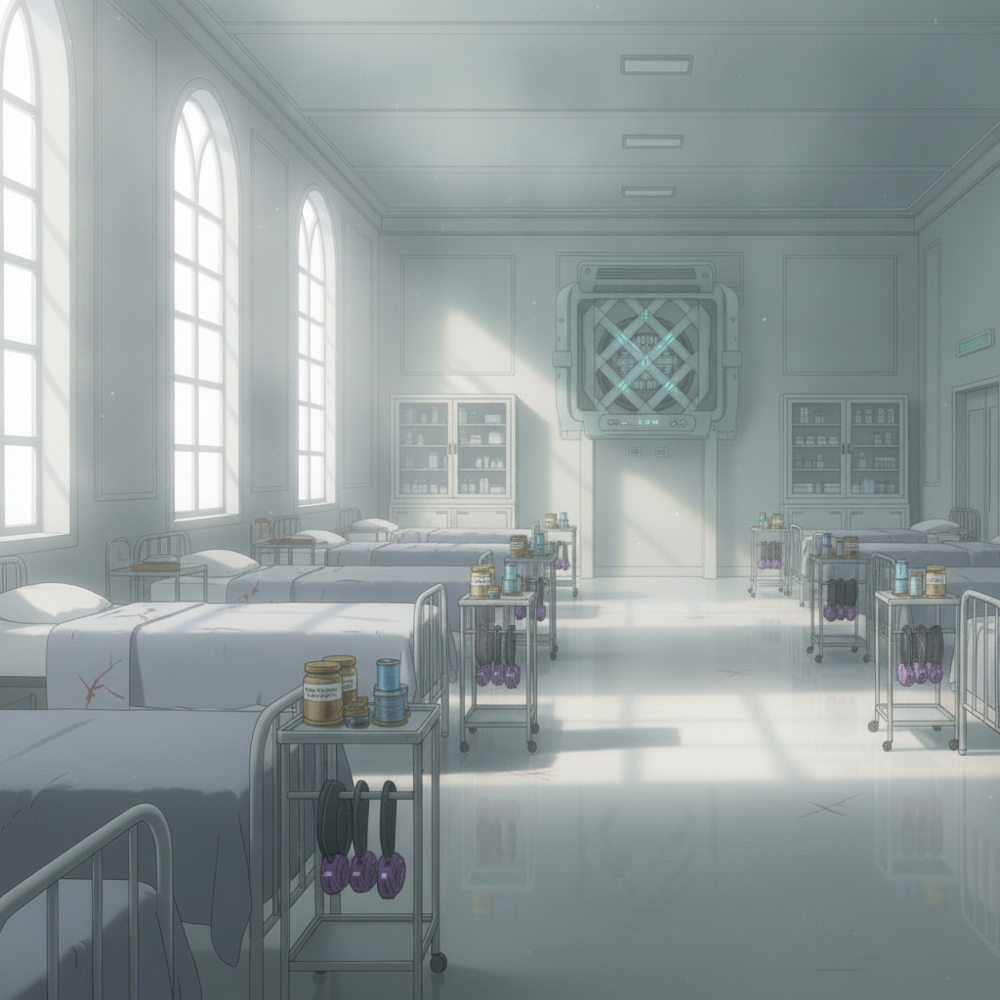
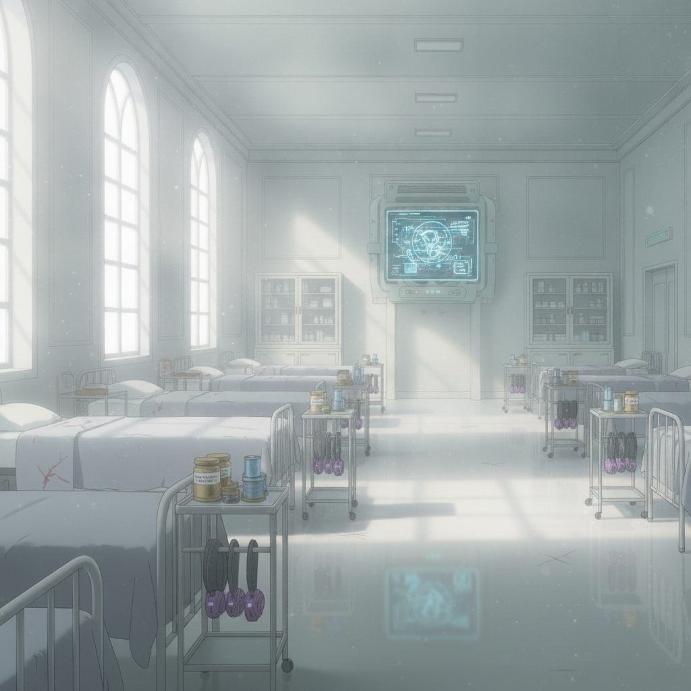

The college infirmary is hushed and sterile. The soft, clean aether-lamp light does little to soothe the sting of our injuries.

I feel the pull of all four conflicts at once: Ember's sentence, Isolde's faith, Seraphine's courts, Wren's fugitive life. I am drawn into all of them and pledged to none.

The ambush has pulled me into a conflict far larger than a college test. The world has irrevocably shifted.